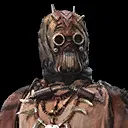
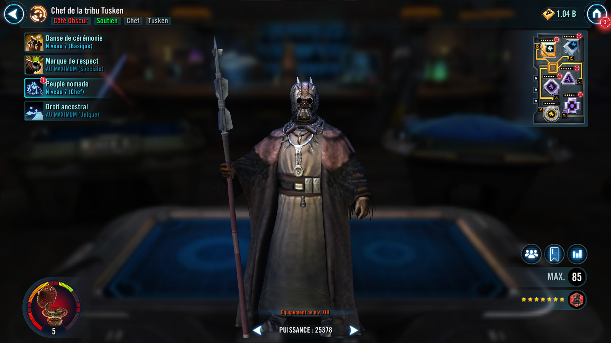
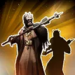
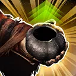
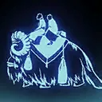

Tusken Chieftain
A strong tribal leader who protects his allies with Momentum and inflicts foes with damaging effects

A strong tribal leader who protects his allies with Momentum and inflicts foes with damaging effects


Call a random other ally to assist, dealing 50% more damage. Grant Tusken allies 2 stacks of Momentum for 3 turns.

Grant all Tusken allies Protection Up (60%) for 2 turns, dispel all debuffs from them, and reduce their cooldowns by 1.

Whenever an enemy gains bonus Turn Meter, grant Tusken allies 1 stack of Momentum for 3 turns. At the end of each turn, Tusken allies gain 20% Defense and Tenacity for each stack of Momentum on them until the end of the next turn.
Whenever a Tusken ally is targeted by an enemy and they have at least 10 stacks of Momentum, remove all stacks of Momentum, Stun all attacking enemies for 1 turn, which can't be resisted, and the targeted Tusken ally takes a bonus turn. For each stack of Momentum removed this way, there is a 20% chance (+5% per Relic Amplifier level, max 50% total) to inflict a stack of Damage Over Time on each attacking enemy for 2 turns.
Omicron Boost : While in 3v3 Grand Arenas: Boba Fett, Scion of Jango counts as a Tusken ally if there is no character that summons at the start of battle. Boba Fett, Scion of Jango's Payout is active and he can't lose Momentum stacks except through expiration.
Whenever an enemy recovers Health or Protection, inflict 1 stack of Damage Over Time on them for 2 turns at the end of that turn. Whenever an enemy takes damage from a Damage Over Time effect, Tusken allies recover 10% Health. Tusken allies are immune to Damage Over Time effects.